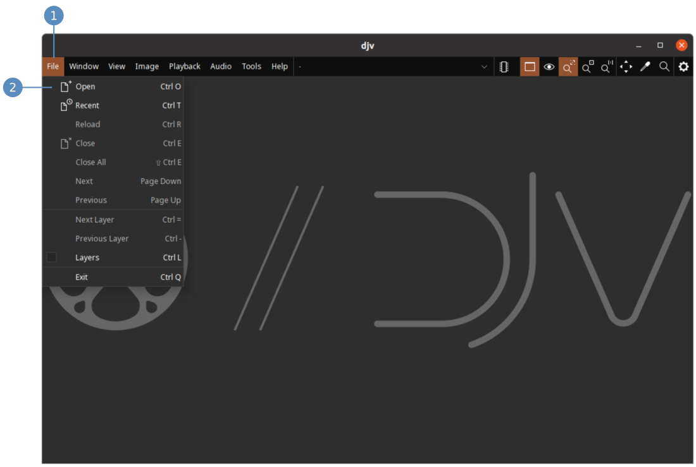

Files can be opened with the file browser, by dragging and dropping onto the application window, or listing them on the command line.
To open files with the file browser:
- Open the "File" menu
- Click the menu item "Open"
- Navigate to the directory where your files are
- Click on a file thumbnail
